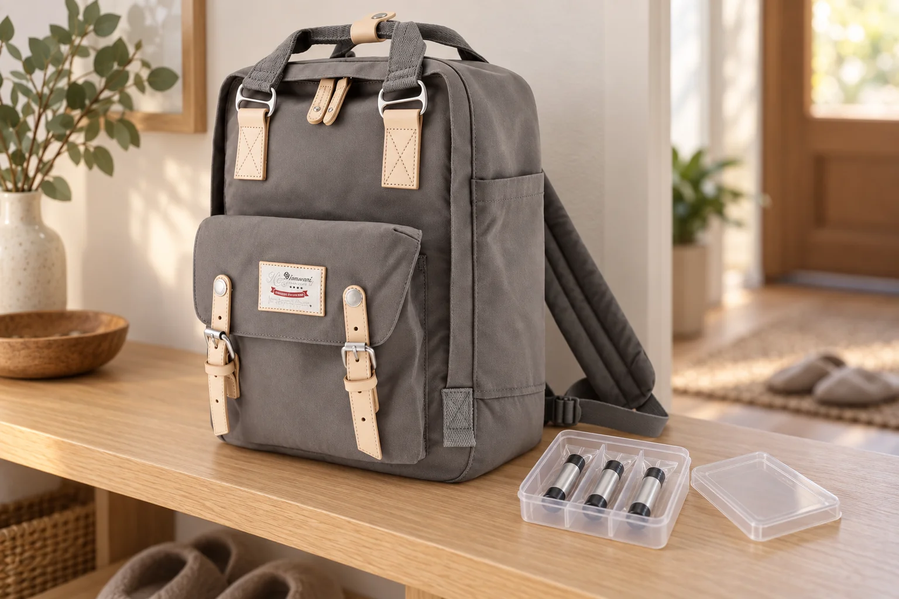

다 쓴 건전지, 백팩에 넣기 전에 종류부터 확인하기

서랍에 모아둔 다 쓴 건전지를 외출할 때 가져가려 합니다. 동전과 열쇠가 든 백팩 앞주머니에 그대로 쏟아 넣기 전에, 무엇을 어디에 배출할 것인지부터 확인하세요. 같은 크기의 전지라도 표시된 종류가 같다는 뜻은 아닙니다.
크기와 색 대신 전지의 표시를 읽습니다
AA처럼 익숙한 모양만 보고 알칼리 전지나 충전지를 짐작하지 않습니다. 미국 EPA의 가정용 폐전지 안내는 형태나 라벨 색 대신 전지의 표시로 종류를 확인하도록 설명합니다. 글자가 지워져 종류를 알 수 없거나 손상·누액·부풀음이 보이면 보통의 건전지와 함께 가방에 담지 말고 제조사나 지역 수거 담당자에게 처리 방법을 먼저 문의하세요.
가져갈 곳이 그 전지를 받는지 확인합니다
수거함 위치만 찾지 말고 배출 가능한 전지 종류도 확인합니다. 가평군의 가정용 폐건전지 분리배출 안내처럼 전용 수거와 별도 문의가 필요한 경우를 구분한 공식 자료를 참고하세요. 실제 방문할 지역과 시설의 최신 안내를 기준으로 준비하고, 내장 전지를 꺼내려고 기기를 임의로 뜯지 않습니다. 보조배터리나 큰 배터리까지 작은 건전지와 같은 방식으로 가져갈 수 있다고 단정하지 마세요.
단자가 금속 소지품과 닿지 않게 나눕니다
정상 상태로 확인한 전지도 동전·열쇠와 한 주머니에 섞지 않습니다. 종류에 맞는 단자 절연과 개별 포장 방법을 공식 안내에 따라 적용한 뒤 다른 소지품과 분리해두세요. EPA는 리튬 계열·충전지 등에 비전도성 테이프로 단자를 가리거나 개별 봉투에 넣는 방법을 안내합니다. 쓰지 않는다고 잔여 에너지까지 없다고 판단하지 않고, 담은 전지가 이동 중 쏟아지거나 눌리지 않는지도 확인합니다.
No.188L 사진의 용기는 별도 준비물입니다
사진의 No.188L은 카탈로그 기준 가로 28 × 세로 39 × 폭 15cm입니다. 그레이 몸체와 베이지색 연결부, 앞 플랩의 두 여밈을 원본에 맞춰 표현했습니다. 사진 속 용기는 가방 밖에 별도로 놓았으며 내부 운반 시험은 하지 않았습니다. 백팩을 배터리 전용 용기나 화재 보호 장치로 여기지 마세요. 수거를 마치면 귀가 후 이동에 사용한 묶음이 가방에 남지 않았는지 확인합니다.
참고·안내
- Himawari No.188L 제품 정보
- 실제 Himawari No.188L 원본을 참조한 AI 연출 사진입니다. 건전지와 용기는 별도 소품이며 백팩의 배터리 운반·보호 성능을 뜻하지 않습니다.
자주 묻는 질문
AA 크기라면 모두 같은 수거 방법인가요?
크기만으로 전지 종류를 구분하지 않습니다. 표시된 종류와 방문할 수거처의 안내를 함께 확인하세요.
손상되거나 부푼 배터리도 같이 가져가도 되나요?
보통의 폐건전지와 함께 백팩에 담지 말고 제조사나 지역 수거 담당자에게 처리 방법을 먼저 문의하세요.